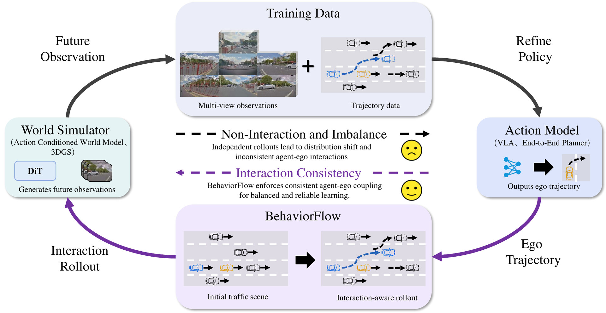

AFARI · MEGVII
World Model Tech Lead
Led world models for autonomous driving — closed-loop simulation, synthetic data generation, and closed-loop training.
2023 – 2026
I was the World Model Tech Lead at AFARI (MEGVII), working on world models for autonomous driving.
I focus on turning cutting-edge research into production systems, enabling applications such as closed-loop simulation, synthetic data generation, and closed-loop training.
| 2026/08 | 🚀 Released BehaviorWorldGen and GaussianDWM++ on arXiv. |
| 2026/06 | 🎉 PatchScene accepted to CVPR 2026. |
| 2025/05 | 📐 High-precision stereo calibration published in Applied Optics. |
| 2025/01 | 📡 Released targetless multi-LiDAR–camera–IMU calibration on arXiv. |
Controllable, behavior-aware world models and generative 3D scenes for closed-loop autonomous-driving simulation, data generation, and training.

Geometric calibration, high-precision 3D measurement, and active next-best-view planning for reliable perception, scanning, and 3D reconstruction across cameras, LiDARs, and IMUs.
World Model Tech Lead
Led world models for autonomous driving — closed-loop simulation, synthetic data generation, and closed-loop training.